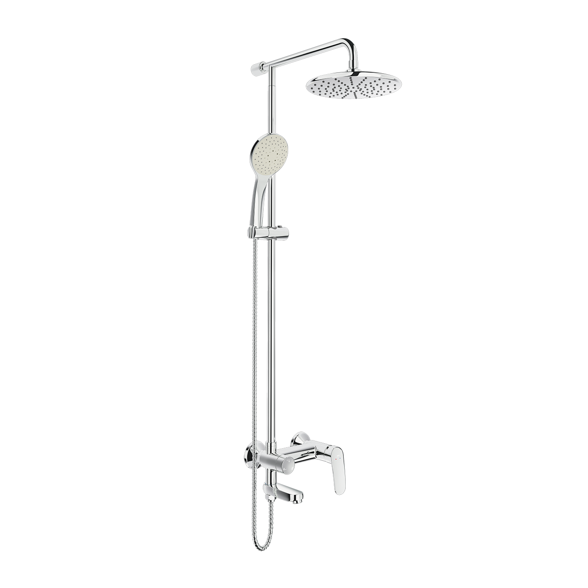
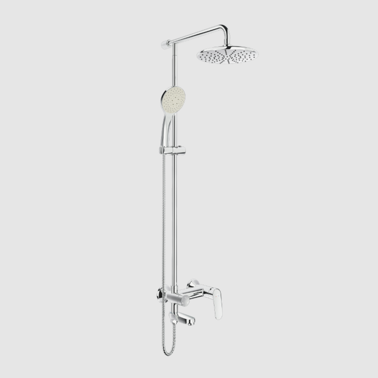
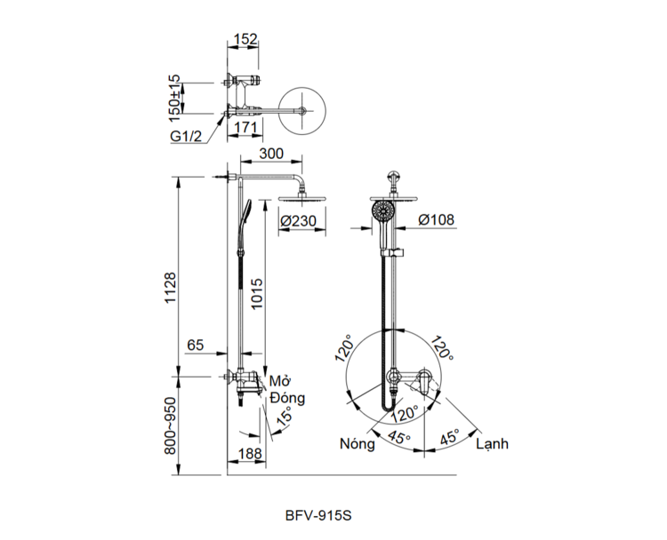

Sen tắm cây BFV-915S đến từ thương hiệu thiết bị vệ sinh INAX, được thiết kế để mang lại sự tiện nghi, bền bỉ và vẻ đẹp hiện đại cho mọi không gian phòng tắm. Với kiểu dáng mới mẻ và tích hợp nhiều tính năng ưu việt, mẫu sen cây này tối ưu hóa trải nghiệm tắm, tạo nên tổng thể hài hòa và tinh tế cho ngôi nhà của bạn.Thiết kế sen tắm cây BFV-915SBFV-915S có thiết kế dễ dàng và tiện lợi khi sử dụng, phù hợp với xu hướng nội thất hiện đại.Sen cây 2 đường nước, tích hợp linh hoạt giữa sen đầu và sen tay, đáp ứng đa dạng nhu cầu sử dụng.Thiết kế cần gạt được chúc xuống dưới giúp người dùng dễ dàng quan sát các ký hiệu nóng lạnh.Gác sen có thể điều chỉnh độ cao tùy theo vóc dáng của người dùng, mang lại sự thoải mái tối đa.Trải nghiệm tắm sảng khoái và tiết kiệmBát sen tắm được thiết kế đặc biệt giúp phun nước đều khắp cơ thể.Dòng nước được tạo bọt không chỉ giúp tiết kiệm nước mà còn tăng cảm giác sảng khoái khi tiếp xúc với làn da.Tốc độ ổn định nhiệt nhanh chóng, đảm bảo an toàn và sự dễ chịu trong suốt quá trình sử dụngĐộ bền vượt trội và an toàn cho sức khỏeĐĩa Cartridge bền bỉ: Sen được trang bị đĩa Cartridge chất lượng cao, giúp vận hành êm ái, bền bỉ và hỗ trợ tiết kiệm nước hiệu quả.Vật liệu an toàn: Tay vặn vòi tiết kiệm nước và thân vòi được kiểm soát hàm lượng chì thấp, bảo vệ sức khỏe người dùng.Lớp mạ Crom/Nikel chất lượng cao: Bề mặt BFV-915S được hoàn thiện bằng lớp mạ Crom/Niken sáng bóng, chống oxy hóa và ăn mòn, giúp giữ vẻ đẹp thẩm mỹ lâu dài trong môi trường ẩm ướt.Vận hành ổn địnhSen tắm cây BFV-915S hoạt động hiệu quả trong dải áp lực nước 0.05 MPa - 0.75 MPa, đảm bảo dòng chảy mạnh mẽ và ổn định.Video giới thiệu sen tắm INAXBản vẽ sen tắm cây BFV-915SXem file hình ảnh sen tắm cây BFV-915S.Thông số kỹ thuậtChất liệuĐồng thau mạ Crom-NikenLoạiSen tắm cây nóng lạnhKích thước300mm x 230mmThương hiệuINAXTính năng- Sen 2 đường nước: Sen đầu và sen tay - Đĩa Cartridge bền bỉ, tiết kiệm nước - Nước tạo bọt sảng khoái - Ổn định nhiệt nhanhÁp lực nước0.05 MPa - 0.75 MPaKhác- Hotline tư vấn và bảo hành: 18006633
Sen tắm cây BFV-915S
Vòi chậu thương hiệu INAX.
Đã cập nhật danh sách yêu thích.
DANH MỤC: Vòi chậu
MÃ SẢN PHẨM: BFV-915S
DEPTH: mm
HEIGHT: 230mm
WIDTH: 300mm
Sen tắm cây BFV-915S đến từ thương hiệu thiết bị vệ sinh INAX, được thiết kế để mang lại sự tiện nghi, bền bỉ và vẻ đẹp hiện đại cho mọi không gian phòng tắm. Với kiểu dáng mới mẻ và tích hợp nhiều tính năng ưu việt, mẫu sen cây này tối ưu hóa trải nghiệm tắm, tạo nên tổng thể hài hòa và tinh tế cho ngôi nhà của bạn.Thiết kế sen tắm cây BFV-915SBFV-915S có thiết kế dễ dàng và tiện lợi khi sử dụng, phù hợp với xu hướng nội thất hiện đại.Sen cây 2 đường nước, tích hợp linh hoạt giữa sen đầu và sen tay, đáp ứng đa dạng nhu cầu sử dụng.Thiết kế cần gạt được chúc xuống dưới giúp người dùng dễ dàng quan sát các ký hiệu nóng lạnh.Gác sen có thể điều chỉnh độ cao tùy theo vóc dáng của người dùng, mang lại sự thoải mái tối đa.Trải nghiệm tắm sảng khoái và tiết kiệmBát sen tắm được thiết kế đặc biệt giúp phun nước đều khắp cơ thể.Dòng nước được tạo bọt không chỉ giúp tiết kiệm nước mà còn tăng cảm giác sảng khoái khi tiếp xúc với làn da.Tốc độ ổn định nhiệt nhanh chóng, đảm bảo an toàn và sự dễ chịu trong suốt quá trình sử dụngĐộ bền vượt trội và an toàn cho sức khỏeĐĩa Cartridge bền bỉ: Sen được trang bị đĩa Cartridge chất lượng cao, giúp vận hành êm ái, bền bỉ và hỗ trợ tiết kiệm nước hiệu quả.Vật liệu an toàn: Tay vặn vòi tiết kiệm nước và thân vòi được kiểm soát hàm lượng chì thấp, bảo vệ sức khỏe người dùng.Lớp mạ Crom/Nikel chất lượng cao: Bề mặt BFV-915S được hoàn thiện bằng lớp mạ Crom/Niken sáng bóng, chống oxy hóa và ăn mòn, giúp giữ vẻ đẹp thẩm mỹ lâu dài trong môi trường ẩm ướt.Vận hành ổn địnhSen tắm cây BFV-915S hoạt động hiệu quả trong dải áp lực nước 0.05 MPa - 0.75 MPa, đảm bảo dòng chảy mạnh mẽ và ổn định.Video giới thiệu sen tắm INAXBản vẽ sen tắm cây BFV-915SXem file hình ảnh sen tắm cây BFV-915S.Thông số kỹ thuậtChất liệuĐồng thau mạ Crom-NikenLoạiSen tắm cây nóng lạnhKích thước300mm x 230mmThương hiệuINAXTính năng- Sen 2 đường nước: Sen đầu và sen tay - Đĩa Cartridge bền bỉ, tiết kiệm nước - Nước tạo bọt sảng khoái - Ổn định nhiệt nhanhÁp lực nước0.05 MPa - 0.75 MPaKhác- Hotline tư vấn và bảo hành: 18006633
DANH MỤC: Vòi chậu
MÃ SẢN PHẨM: BFV-915S
DEPTH: mm
HEIGHT: 230mm
WIDTH: 300mm